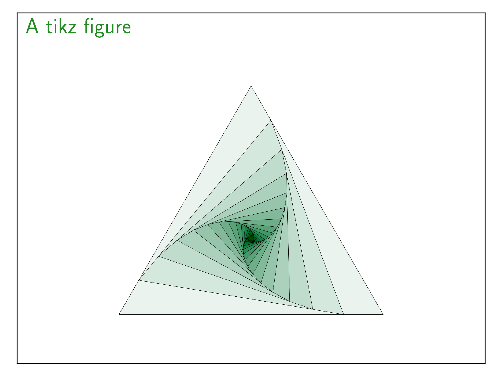

<!DOCTYPE html>

<html xmlns="http://www.w3.org/1999/xhtml">
  <head>
    <meta http-equiv="Content-Type" content="text/html; charset=utf-8" />
    
    <title>tikz &#8212; Beampy 0.5.2 documentation</title>
    
    <link rel="stylesheet" href="../_static/bootstrap-sphinx.css" type="text/css" />
    <link rel="stylesheet" href="../_static/pygments.css" type="text/css" />
    <link rel="stylesheet" href="../_static/gallery.css" type="text/css" />
    <link rel="stylesheet" href="../_static/css/beampy_sphinx.css" type="text/css" />
    
    <script type="text/javascript">
      var DOCUMENTATION_OPTIONS = {
        URL_ROOT:    '../',
        VERSION:     '0.5.2',
        COLLAPSE_INDEX: false,
        FILE_SUFFIX: '.html',
        HAS_SOURCE:  true,
        SOURCELINK_SUFFIX: '.txt'
      };
    </script>
    <script type="text/javascript" src="../_static/jquery.js"></script>
    <script type="text/javascript" src="../_static/underscore.js"></script>
    <script type="text/javascript" src="../_static/doctools.js"></script>
    <script type="text/javascript" src="../_static/js/jquery-1.11.0.min.js"></script>
    <script type="text/javascript" src="../_static/js/jquery-fix.js"></script>
    <script type="text/javascript" src="../_static/bootstrap-3.3.7/js/bootstrap.min.js"></script>
    <script type="text/javascript" src="../_static/bootstrap-sphinx.js"></script>
    <link rel="index" title="Index" href="../genindex.html" />
    <link rel="search" title="Search" href="../search.html" />
    <link rel="next" title="video" href="plot_video.html" />
    <link rel="prev" title="text" href="plot_text.html" />
<meta charset='utf-8'>
<meta http-equiv='X-UA-Compatible' content='IE=edge,chrome=1'>
<meta name='viewport' content='width=device-width, initial-scale=1.0, maximum-scale=1'>
<meta name="apple-mobile-web-app-capable" content="yes">

  </head>
  <body>

  <div id="navbar" class="navbar navbar-default navbar-fixed-top">
    <div class="container">
      <div class="navbar-header">
        <!-- .btn-navbar is used as the toggle for collapsed navbar content -->
        <button type="button" class="navbar-toggle" data-toggle="collapse" data-target=".nav-collapse">
          <span class="icon-bar"></span>
          <span class="icon-bar"></span>
          <span class="icon-bar"></span>
        </button>
        <a class="navbar-brand" href="../index.html">
          Beampy</a>
        <span class="navbar-text navbar-version pull-left"><b>0.5.2</b></span>
      </div>

        <div class="collapse navbar-collapse nav-collapse">
          <ul class="nav navbar-nav">
            
            
              <li class="dropdown globaltoc-container">
  <a role="button"
     id="dLabelGlobalToc"
     data-toggle="dropdown"
     data-target="#"
     href="../index.html">Documentation <b class="caret"></b></a>
  <ul class="dropdown-menu globaltoc"
      role="menu"
      aria-labelledby="dLabelGlobalToc"><ul class="current">
<li class="toctree-l1"><a class="reference internal" href="../install.html">Install Beampy</a></li>
<li class="toctree-l1"><a class="reference internal" href="../tutorials.html">Tutorials</a></li>
<li class="toctree-l1 current"><a class="reference internal" href="index.html">Beampy Modules</a></li>
<li class="toctree-l1"><a class="reference internal" href="../auto_themes/index.html">Beampy Themes</a></li>
<li class="toctree-l1"><a class="reference internal" href="../API.html">Beampy API</a></li>
<li class="toctree-l1"><a class="reference internal" href="../changelog.html">Change-log</a></li>
<li class="toctree-l1"><a class="reference internal" href="../todo.html">TODO</a></li>
</ul>
</ul>
</li>
              
                <li class="dropdown">
  <a role="button"
     id="dLabelLocalToc"
     data-toggle="dropdown"
     data-target="#"
     href="#">Page <b class="caret"></b></a>
  <ul class="dropdown-menu localtoc"
      role="menu"
      aria-labelledby="dLabelLocalToc"><ul>
<li><a class="reference internal" href="#">tikz</a></li>
<li><a class="reference internal" href="#module-arguments">Module arguments</a></li>
</ul>
</ul>
</li>
              
            
            
            
            
            
              <li class="hidden-sm">
<div id="sourcelink">
  <a href="../_sources/auto_examples/plot_tikz.rst.txt"
     rel="nofollow">Source</a>
</div></li>
            
          </ul>

          
            
<form class="navbar-form navbar-right" action="../search.html" method="get">
 <div class="form-group">
  <input type="text" name="q" class="form-control" placeholder="Search" />
 </div>
  <input type="hidden" name="check_keywords" value="yes" />
  <input type="hidden" name="area" value="default" />
</form>
          
        </div>
    </div>
  </div>

<div class="container">
  <div class="row">
      <div class="col-md-3">
        <div id="sidebar" class="bs-sidenav" role="complementary"><ul>
<li><a class="reference internal" href="#">tikz</a></li>
<li><a class="reference internal" href="#module-arguments">Module arguments</a></li>
</ul>

<div id="sourcelink">
  <a href="../_sources/auto_examples/plot_tikz.rst.txt"
     rel="nofollow">Source</a>
</div>
<form action="../search.html" method="get">
 <div class="form-group">
  <input type="text" name="q" class="form-control" placeholder="Search" />
 </div>
  <input type="hidden" name="check_keywords" value="yes" />
  <input type="hidden" name="area" value="default" />
</form>
        </div>
      </div>
    <div class="col-md-9 content">
      
  <div class="section" id="tikz">
<span id="sphx-glr-auto-examples-plot-tikz-py"></span><h1>tikz<a class="headerlink" href="#tikz" title="Permalink to this headline">¶</a></h1>
<p>Add pgf/tikz drawing to the slide.</p>
<p>You could find great examples here <a class="reference external" href="http://www.texample.net/tikz/examples/">http://www.texample.net/tikz/examples/</a></p>
<div class="highlight-python"><div class="highlight"><pre><span></span><span class="kn">from</span> <span class="nn">beampy</span> <span class="kn">import</span> <span class="o">*</span>

<span class="c1"># Remove quiet=True to get beampy compilation outputs</span>
<span class="n">doc</span> <span class="o">=</span> <span class="n">document</span><span class="p">(</span><span class="n">quiet</span><span class="o">=</span><span class="bp">True</span><span class="p">)</span>

<span class="n">tkz_options</span> <span class="o">=</span> <span class="sa">r</span><span class="s2">&quot;scale=1.4, every node/.style={minimum size=1cm},on grid&quot;</span>

<span class="k">with</span> <span class="n">slide</span><span class="p">(</span><span class="s1">&#39;A tikz figure&#39;</span><span class="p">):</span>
    <span class="n">tikz</span><span class="p">(</span><span class="sa">r</span><span class="s2">&quot;&quot;&quot;</span>
<span class="s2">\begin{scope}[</span>
<span class="s2">           yshift=-83,every node/.append style={</span>
<span class="s2">           yslant=0.5,xslant=-1},yslant=0.5,xslant=-1</span>
<span class="s2">           ]</span>
<span class="s2">       \draw[step=4mm, black] (0,0) grid (5,5);</span>
<span class="s2">       \draw[black,thick] (0,0) rectangle (5,5);%borders</span>
<span class="s2">       \fill[greenMW] (2.05,2.05) rectangle (2.35,2.35); </span><span class="si">% c</span><span class="s2">enter pixel</span>
<span class="s2">       \fill[greenMW] (1.65,2.05) rectangle (1.95,2.35); </span><span class="si">%le</span><span class="s2">ft</span>
<span class="s2">       \fill[greenMW] (2.45,2.05) rectangle (2.75,2.35); </span><span class="si">%r</span><span class="s2">ight</span>
<span class="s2">       \fill[greenMW] (2.05,2.45) rectangle (2.35,2.75); %top</span>
<span class="s2">       \fill[greenMW] (2.05,1.95) rectangle (2.35,1.65); %bottom</span>
<span class="s2">% 8 -pixel setting</span>
<span class="s2">       \fill[greenMW] (1.65,2.45) rectangle (1.95,2.75); %top-left</span>
<span class="s2">       \fill[greenMW] (2.45,2.45) rectangle (2.75,2.75); %top-right</span>
<span class="s2">       \fill[greenMW] (2.75,1.95) rectangle (2.45,1.65); %bottom-right</span>
<span class="s2">       \fill[greenMW] (1.65,1.95) rectangle (1.95,1.65); %bottom-left</span>
<span class="s2">% 2. ring</span>
<span class="s2">       \fill[greenMW] (1.25,1.55) rectangle (1.55,1.25); %bottom-left</span>
<span class="s2">       \fill[greenMW] (0.85,1.55) rectangle (1.15,1.25); %bottom-left</span>
<span class="s2">       \fill[greenMW] (0.85,1.15) rectangle (1.15,0.85); %bottom-left</span>
<span class="s2">       \fill[greenMW] (1.25,0.75) rectangle (1.55,0.45); %bottom-left</span>
<span class="s2">   \end{scope}</span>
<span class="s2">%</span>
<span class="s2">   \begin{scope}[</span>
<span class="s2">           yshift=0,every node/.append style={</span>
<span class="s2">           yslant=0.5,xslant=-1},yslant=0.5,xslant=-1</span>
<span class="s2">           ]</span>
<span class="s2">       \fill[white,fill opacity=0.9] (0,0) rectangle (5,5);</span>
<span class="s2">       \draw[step=4mm, black] (0,0) grid (5,5); </span><span class="si">%g</span><span class="s2">rid definition</span>
<span class="s2">       \draw[black,thick] (0,0) rectangle (5,5);%borders</span>
<span class="s2">       \fill[greenMW] (2.05,2.05) rectangle (2.35,2.35); </span><span class="si">% c</span><span class="s2">enter pixel</span>
<span class="s2">       \fill[greenMW] (1.65,2.05) rectangle (1.95,2.35); </span><span class="si">%le</span><span class="s2">ft</span>
<span class="s2">       \fill[greenMW] (2.45,2.05) rectangle (2.75,2.35); </span><span class="si">% r</span><span class="s2">ight</span>
<span class="s2">       \fill[greenMW] (2.05,2.45) rectangle (2.35,2.75); % top</span>
<span class="s2">       \fill[greenMW] (2.05,1.95) rectangle (2.35,1.65); % bottom</span>
<span class="s2">% 4 -pixel setting</span>
<span class="s2">       \fill[greenMW] (1.65,2.45) rectangle (1.95,2.75); %top-left</span>
<span class="s2">       \fill[greenMW] (2.45,2.45) rectangle (2.75,2.75); %top-right</span>
<span class="s2">       \fill[greenMW] (2.75,1.95) rectangle (2.45,1.65); %bottom-right</span>
<span class="s2">       \fill[greenMW] (1.65,1.95) rectangle (1.95,1.65); %bottom-left</span>
<span class="s2">% 2. ring</span>
<span class="s2">       \fill[orange] (1.25,1.55) rectangle (1.55,1.25);</span>
<span class="s2">       \fill[orange] (0.85,1.55) rectangle (1.15,1.25);</span>
<span class="s2">       \fill[orange] (0.85,1.15) rectangle (1.15,0.85);</span>
<span class="s2">       \fill[blue] (1.25,0.75) rectangle (1.55,0.45);</span>
<span class="s2">   \end{scope}</span>
<span class="s2">%</span>
<span class="si">% d</span><span class="s2">raw annotations</span>
<span class="s2">%</span>
<span class="s2">   \draw[-latex,thick,orange](-3,5)node[left]{ }</span>
<span class="s2">       to[out=0,in=90] (-.4,1.4);</span>
<span class="s2">   \draw[-latex,thick,blue](-3,5)node[left]{ }</span>
<span class="s2">       to[out=0,in=90] (0.8,1.15);</span>
<span class="s2">   \draw[-latex,thick,greenMW](-3,5)node[left]{3 patches}</span>
<span class="s2">       to[out=0,in=90] (0,2.8);</span>
<span class="s2">%</span>
<span class="s2">   \draw[-latex,thick,greenMW](-3,-2)node[left]{1 patch}</span>
<span class="s2">       to[out=0,in=200] (-1,-.9);</span>
<span class="s2">   \draw[thick,gray!70!black](6,4) node {4 neighbourhood rule};</span>
<span class="s2">   \draw[thick,gray!70!black](6,-2) node {8 neighbourhood rule};</span>
<span class="s2">%</span>
<span class="s2">    &quot;&quot;&quot;</span><span class="p">,</span> <span class="n">figure_options</span><span class="o">=</span><span class="n">tkz_options</span><span class="p">,</span>
         <span class="n">x</span><span class="o">=</span><span class="s1">&#39;center&#39;</span><span class="p">,</span> <span class="n">y</span><span class="o">=</span><span class="s1">&#39;center&#39;</span><span class="p">)</span>


<span class="n">display_matplotlib</span><span class="p">(</span><span class="n">gcs</span><span class="p">())</span>
</pre></div>
</div>

</div>
<div class="section" id="module-arguments">
<h1>Module arguments<a class="headerlink" href="#module-arguments" title="Permalink to this headline">¶</a></h1>
<dl class="class">
<dt>
<em class="property">class </em><code class="descclassname">beampy.</code><code class="descname">tikz</code><span class="sig-paren">(</span><em>tikzcmd</em>, <em>**kwargs</em><span class="sig-paren">)</span></dt>
<dd><p>Add Tikz/pgf graphic to the slide.</p>
<table class="docutils field-list" frame="void" rules="none">
<col class="field-name" />
<col class="field-body" />
<tbody valign="top">
<tr class="field-odd field"><th class="field-name">Parameters:</th><td class="field-body"><ul class="first last simple">
<li><strong>tikzcmd</strong> (<em>string</em>) – String containing the main Tikz commands contained between
begin{tikzpicture} and end{}tikzpicture}.</li>
<li><strong>x</strong> (<em>int</em><em> or </em><em>float</em><em> or </em><em>{'center'</em><em>, </em><em>'auto'}</em><em> or </em><em>str</em><em>, </em><em>optional</em>) – Horizontal position for the Tikz graphic (the default theme set this to
0). See positioning system of Beampy.</li>
<li><strong>y</strong> (<em>int</em><em> or </em><em>float</em><em> or </em><em>{'center'</em><em>, </em><em>'auto'}</em><em> or </em><em>str</em><em>, </em><em>optional</em>) – Vertical position for the Tikz graphic (the default theme sets this to 0).
See positioning system of Beampy.</li>
<li><strong>tikz_header</strong> (<em>str</em><em> or </em><em>None</em><em>, </em><em>optional</em>) – Add extra Tiks/pgf libraries and style (Tiks commands usetikzlibrary
and tickstyle), everything that is included befor egin{document}
(the default theme sets this to None).</li>
<li><strong>tex_packages</strong> (<em>list of string</em><em> or </em><em>None</em><em>, </em><em>optional</em>) – <p>Add extra Tex packages that are included using the usepackages (the
default theme set this to None). The list should only contains the name
of tex packages as strings.</p>
<pre class="literal-block">
&gt;&gt;&gt; tex_packages = [‘xolors’,’tikz-3dplot’]
</pre>
</li>
<li><strong>figure_options</strong> (<em>string</em><em> or </em><em>None</em><em>,</em>) – Tikz options added just after: egin{tikzpicture}[options] (the default
theme sets this to None).</li>
<li><strong>figure_anchor</strong> (<em>{'top_left'</em><em> or </em><em>'top_right'</em><em> or </em><em>'bottom_left'</em><em> or </em><em>'bottom_right' }</em><em>, </em><em>optional</em>) – Anchor of the svg produced by Tikz.</li>
</ul>
</td>
</tr>
</tbody>
</table>
</dd></dl>

<div class="sphx-glr-footer docutils container">
<div class="sphx-glr-download docutils container">
<a class="reference download internal" href="../_downloads/plot_tikz.py" download=""><code class="xref download docutils literal"><span class="pre">Download</span> <span class="pre">Python</span> <span class="pre">source</span> <span class="pre">code:</span> <span class="pre">plot_tikz.py</span></code></a></div>
<div class="sphx-glr-download docutils container">
<a class="reference download internal" href="../_downloads/plot_tikz.ipynb" download=""><code class="xref download docutils literal"><span class="pre">Download</span> <span class="pre">Jupyter</span> <span class="pre">notebook:</span> <span class="pre">plot_tikz.ipynb</span></code></a></div>
</div>
<p class="sphx-glr-signature"><a class="reference external" href="https://sphinx-gallery.readthedocs.io">Gallery generated by Sphinx-Gallery</a></p>
</div>


    </div>
      
  </div>
</div>
<footer class="footer">
  <div class="container">
    <p class="pull-right">
      <a href="#">Back to top</a>
      
    </p>
    <p>
        &copy; Copyright 2016-2018, Beampy Dev Team.<br/>
      Created using <a href="http://sphinx-doc.org/">Sphinx</a> 1.6.2.<br/>
    </p>
  </div>
</footer>
  </body>
</html>